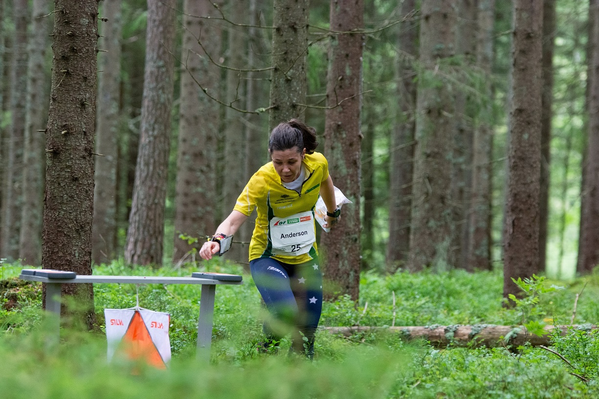
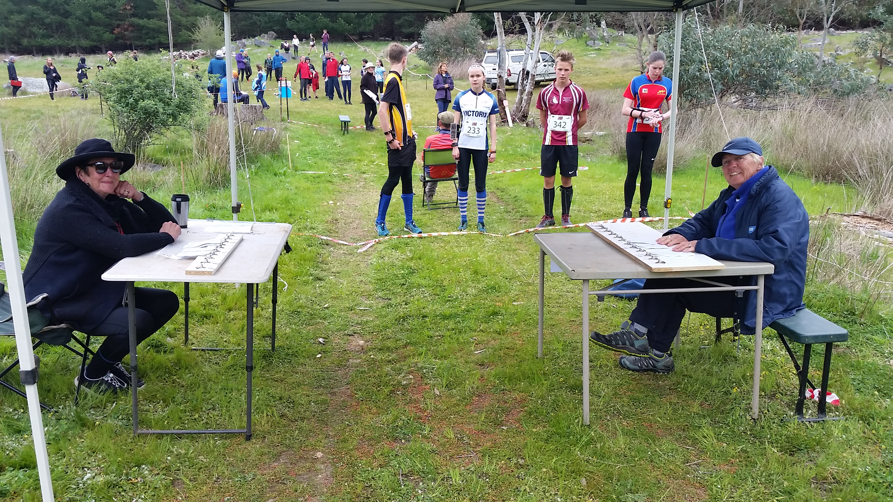
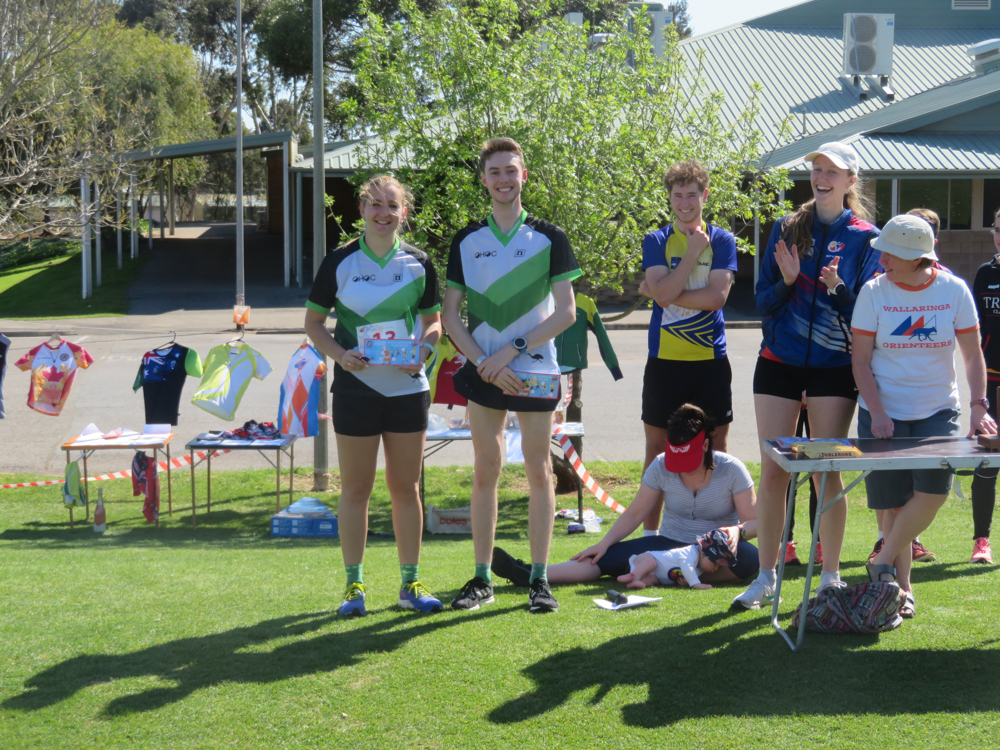
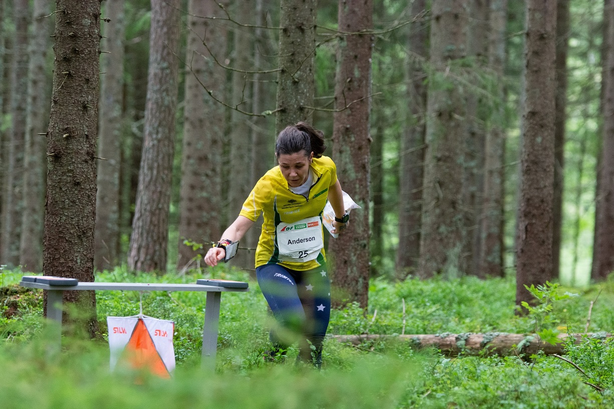
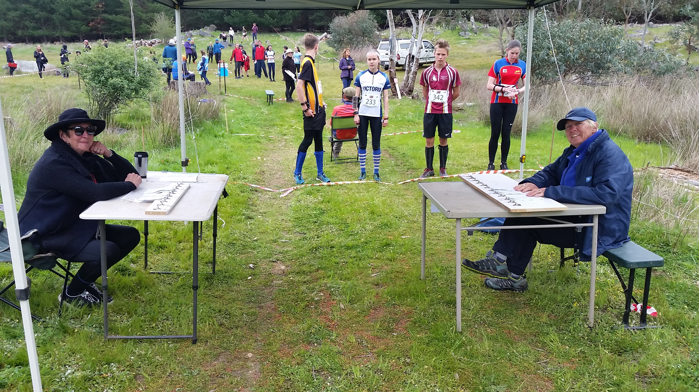
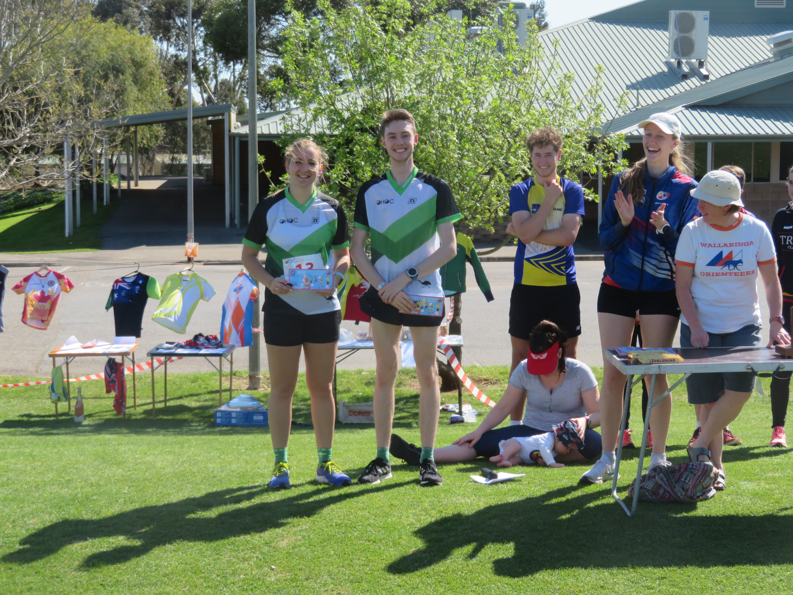
 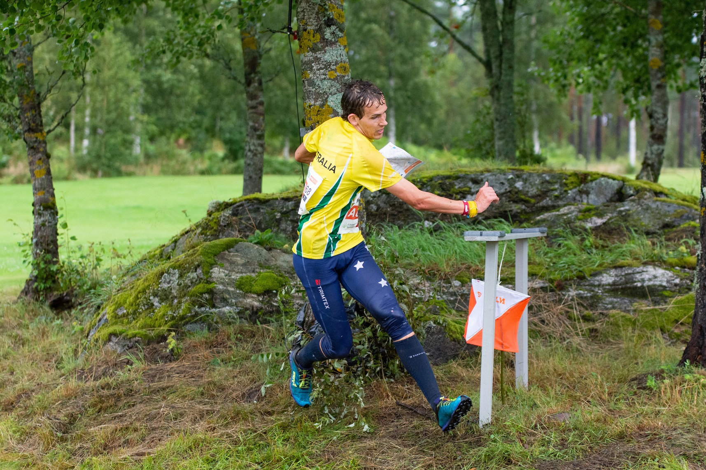
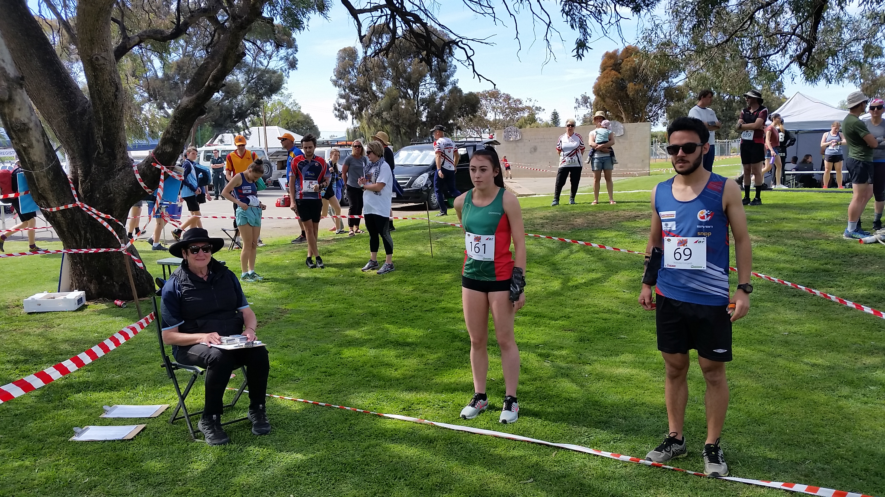
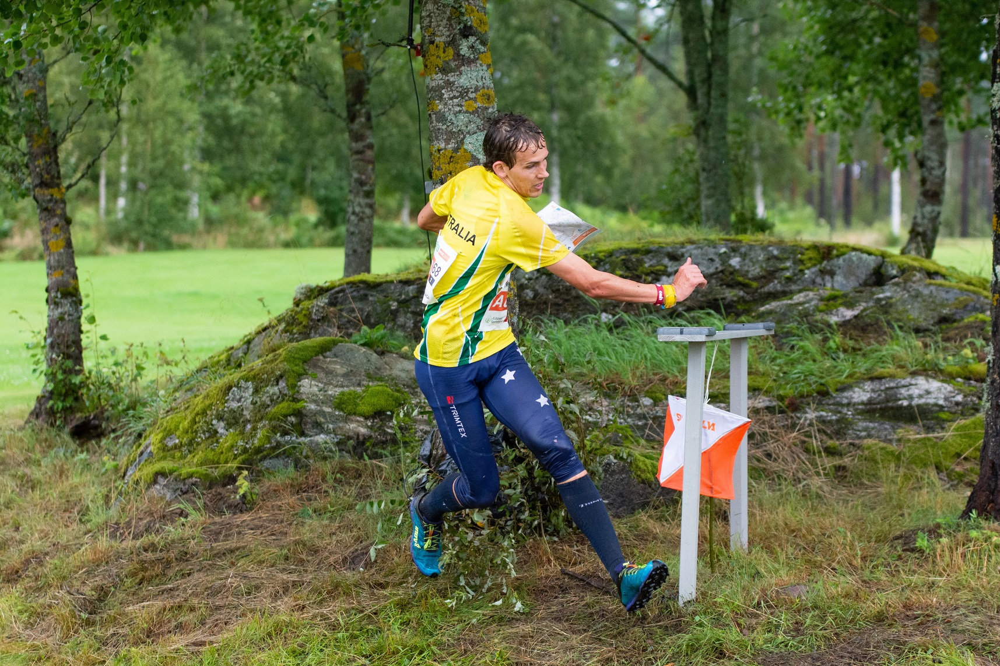
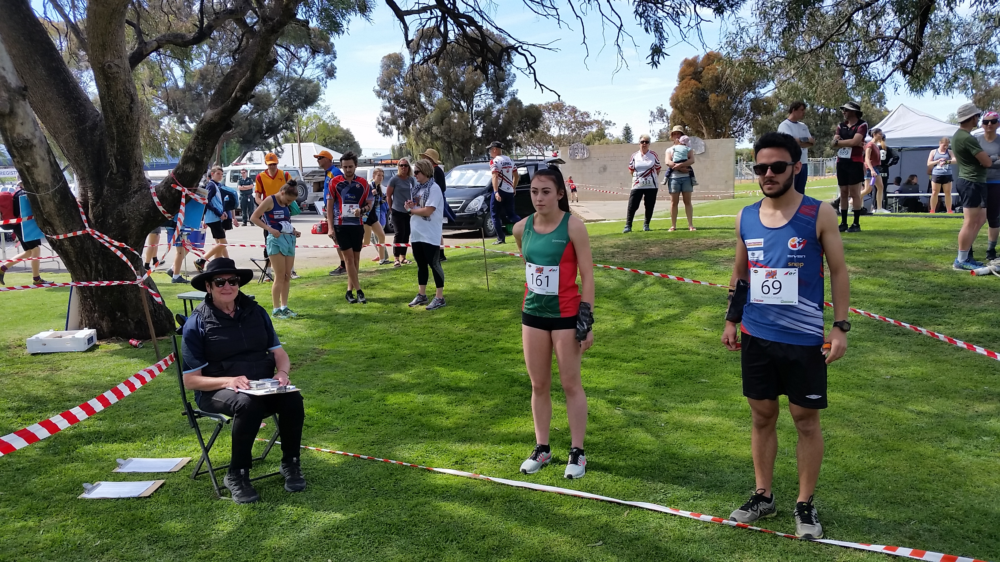
A club for beginners, families and competitive orienteers based in Adelaide’s Southern suburbs
Founded in 1978 the Onkaparinga Hills Orienteering Club forms part of Orienteering South Australia. The club represents the Mitcham Hills area and nearby southern suburbs but membership is open to all regardless of location.
WHAT IS ORIENTEERING?
Orienteering is a navigation sport in which participants use a map to complete a course in the quickest time possible. Courses consist of several controls which participants must visit in the correct order with progress recorded by an electronic timing system.
Courses may be in suburban or bush locations and distances vary depending on the format (generally 2-4km for shorter events, up to 12km for the longest events). Events for younger children include string courses and Kid-O.
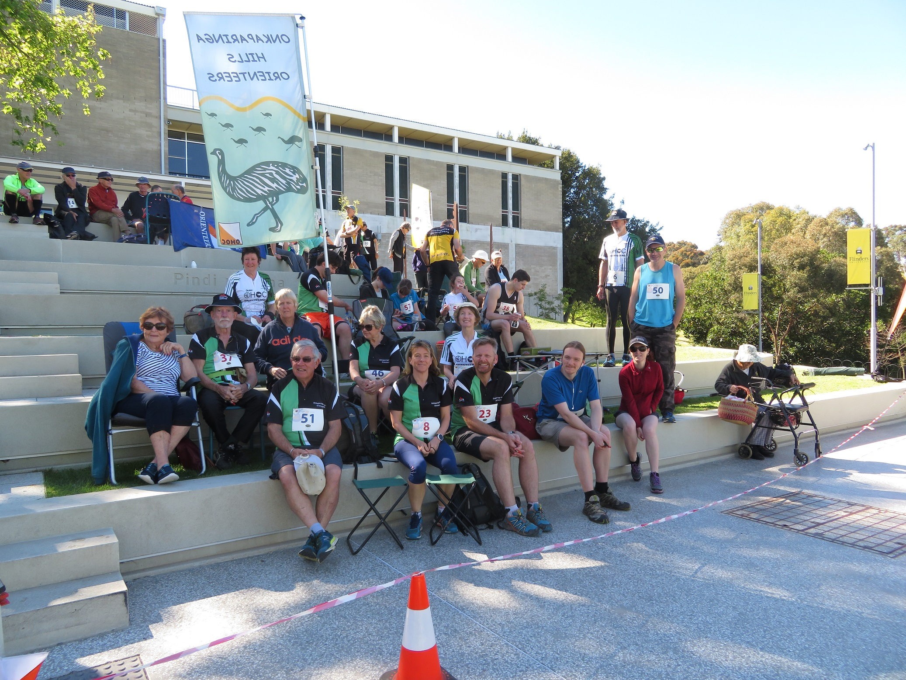
MEMBERS
Our members include families, primary and high school representatives, casual orienteers and elite competitors.
Simon Uppill runs in the South Australian Southern Arrows team in the National Orienteering League and has represented Australian in both Junior and Senior World Orienteering Championships (10 occasions at WOC). Bridget Uppill (nee Anderson) has also run both at JWOC and WOC for Australia, and is currently coach of the Junior Southern Arrows Squad. Angus Haines was a member of the Australian team at the Junior World Orienteering Championships in 2018 and 19 and the World Championship team in 2022.
FOR ALL AGES AND ABILITIES
Orienteering in South Australia is a family-friendly, community-based sport run by volunteers. OHOC welcomes people all ages and abilities, from beginners to elites, runners, walkers, bike riders and families. SA training groups and events include:
- Kid-O, for ages 0 - 8;
- Southern Darts, training for orienteers up to 12 years;
- Junior Arrows, for ages 12-18;
- SA Schools team;
- Southern Arrows, South Australia's national representative squad;
- Mountain Bike Orienteering.
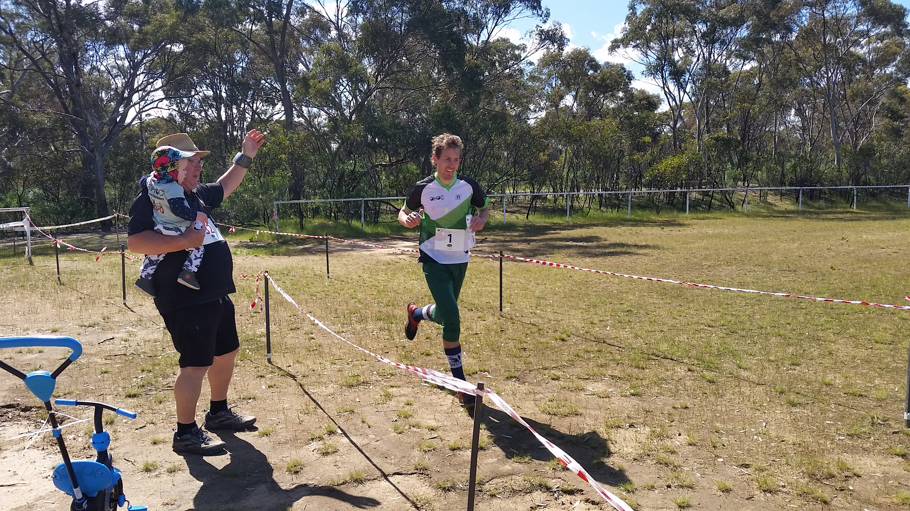
CLUB ACTIVITIES
OHOC social events include an end of year gathering, the AGM and informal get-togethers after events. The annual interclub relays are an opportunity to test ourselves against other SA clubs in a competitive but friendly atmosphere. OHOC are the 2022 SA club champions.
The club organises several events each year in suburban Adelaide and regional South Australia. Upcoming events are listed here. Training activities are available to members – contact Robin Uppill (8278 3017 or 0419 037 770) for more information.